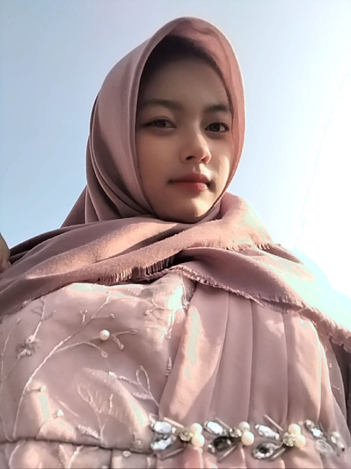
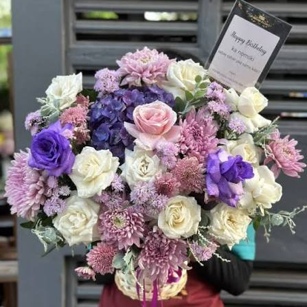

Pesan Dari Jidan
Pencet Nyakkk
Menyiapkan keberanian buat minta maaf...
0%
Klarif Jidan 1 / 3

Maaf nyakk, setiap telponan jidan bahase mas R terus, jidan tau mesti ipull ngga suka yen jidan bahas mas R teruss, jadii maafiiinnn yahhh.
Klarif Jidan 2 / 3
Rasane aneh banget pasti kalo seharian kamu cuekkkk. Dunia kayak kehilangan warnane.
Klarif Jidan 3 / 3
Jidan janji bakal belajar buat lebih ngertiin Ipul lagi kedepane dan Jidan gabakal bahas bahas itu menehh. Jadi, jangan marah lagi sama jidan yaaa? 🥺
Mungkin aku bukan orang yang selalu sempurna atau selalu tahu carane bersikap yang benar di setiap waktu.
Tapi satu hal yang harus ipul tahu, aku selalu sayang sama ipull dan ga pernah ada niatan sedikit pun buat bikin Ipull sedih.
Sekali lagi maaf yaaa pull kalo Jidan nakal, padahal jidan sayang sama ipull dan satu lagi, jidan bersyukur banget bisa kenal ipull, jadii maaff yaaa cantikk? 🥺
— Dari Jidannn tamvan

Apresiasi
Bunganya virtual dulu, senyum manisnya yang beneran ditunggu ya!